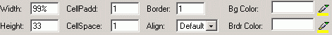

Lorsqu'on sélectionne la balise <Table>, le panneau Configuration Tableau est affiché, permettant la définition des propriétés du tableau entier:
- Largeur & Hauteur - indiquent les dimensions du tableau par rapport aux celles de la page du navigateur. Elles peuvent être définies soit en pixels soit en pourcentage par rapport aux dimensions de la page. Pour la largeur, la valeur par défaut est 75%;
- RemplissCellules – définit le remplissement des cellules du tableau, c'est-à-dire la distance entre les bordures de la cellule et son contenu. La valeur par défaut est 2.
- EspacemCellules – définit l'espacement entre les cellules d'un tableau, c'est-à-dire la distance entre les cellules limitrophes. La valeur par défaut est 2.
- Bordure – définit l'épaisseur de la bordure du tableau. La valeur par défaut est 1. Afin de rendre la bordure invisible, il faut mettre cet attribut à 0.
- Align – ce menu déroulant définit la position du tableau par rapport à la page du navigateur. Les options disponibles sont: Gauche, Droite, Centre.
- Couleur d'ar-pl - cette palette de couleurs aide à la sélection de la couleur désirée pour l'arrière-plan du tableau. On a aussi la possibilité d'introduire la valeur hexadécimale de la couleur;
- Couleur Bordure – cette palette de couleurs aide à la sélection de la couleur désirée pour la bordure du tableau. On a aussi la possibilité d'introduire la valeur hexadécimale de la couleur;